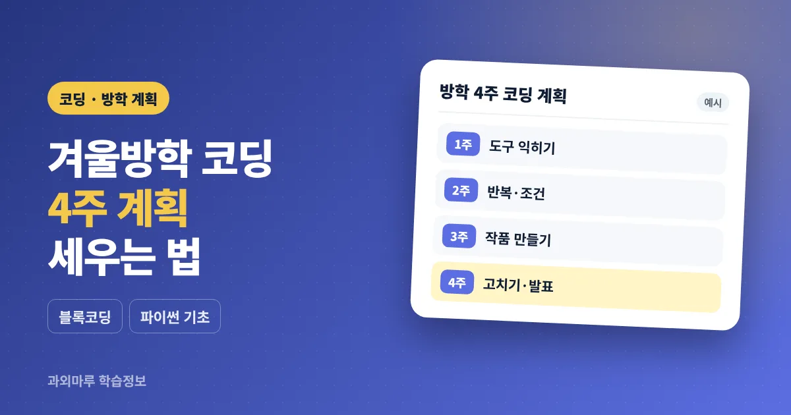

- 4주 목표는 작은 작품 1개 완성처럼 눈에 보이는 결과물로 정하기
- 초등은 블록코딩, 블록코딩 경험이 있는 중등은 파이썬 기초로 시작
- 하루 30~60분, 주 4~5일(예시) — 길게 몰아서 하기보다 짧게 자주
방학 동안 코딩을 얼마나 배울 수 있나요?
겨울방학 4주 동안이면 코딩을 처음 하는 학생도 순서·반복·조건 같은 기본 개념을 익히고 작은 작품 하나를 완성하는 정도는 충분히 목표로 잡을 수 있습니다. 반대로 4주 만에 '언어 하나를 끝내겠다'는 목표는 대부분 무리이므로, 범위를 작게 잡는 것이 좋습니다.
여기서 작품은 학생이 직접 만들어 실행해 볼 수 있는 작은 프로그램을 말합니다. 퀴즈, 미로 게임, 숫자 맞히기 게임처럼 5~10분이면 다른 사람에게 보여 줄 수 있는 크기가 적당합니다. 결과물이 있어야 학생 스스로 '무엇을 할 수 있게 되었는지' 확인할 수 있고, 개학 뒤에도 이어서 고쳐 볼 거리가 남습니다.
방학 시작일과 개학일은 학교마다 다르므로, 계획을 세우기 전에 학교 학사일정을 먼저 확인해 주세요. 방학이 4주보다 길면 마지막 주를 복습·보완 주간으로 두고, 짧으면 3주차와 4주차를 합쳐 작품 완성에 집중합니다.
| 출발 상태 | 4주 현실적인 목표 (예시) | 무리한 목표 |
|---|---|---|
| 코딩 처음 (초등) | 블록코딩으로 움직이는 캐릭터·퀴즈 작품 1개 | 여러 도구를 동시에 배우기 |
| 블록코딩 경험 있음 (초등 고학년) | 점수·시간이 있는 게임 1개, 변수 사용 | 바로 텍스트 코딩으로 긴 프로그램 만들기 |
| 블록코딩 경험 있음 (중등) | 파이썬 기초(출력·변수·조건·반복)와 숫자 맞히기 게임 | 문법 책 한 권을 처음부터 끝까지 외우기 |
| 파이썬 기초 경험 있음 (중등) | 리스트·함수를 써서 간단한 자료 정리 프로그램 | 앱·웹사이트 완성 |
표는 일반적인 흐름을 정리한 예시이며, 학생마다 속도 차이가 큽니다. 처음 1주는 목표를 고정하지 말고 학생이 어느 단계인지 확인하는 기간으로 써도 괜찮습니다.
겨울방학 코딩 4주 계획표는 어떻게 짜나요?
4주 계획은 1주차 도구 익히기, 2주차 반복·조건, 3주차 작품 만들기, 4주차 고치기·발표로 나누면 됩니다. 주차마다 '이번 주에 할 수 있게 될 것' 한 줄을 적어 두면 진도가 밀려도 무엇을 먼저 할지 정하기 쉽습니다.
| 주차 | 초등 (블록코딩) | 중등 (파이썬 기초) | 주말 점검 (예시) |
|---|---|---|---|
| 1주차 · 도구 익히기 | 화면 구성, 블록 끌어다 놓기, 순서대로 움직이기 | 실행 환경 준비, 출력·입력, 변수 | 짧은 인사 프로그램 실행하기 |
| 2주차 · 반복과 조건 | 반복하기, '만약 ~라면' 블록, 키보드로 조작하기 | if 조건문, for·while 반복문 | 조건에 따라 다르게 반응하는 예제 3개 |
| 3주차 · 작품 만들기 | 점수 변수를 넣은 게임이나 퀴즈 만들기 | 숫자 맞히기 게임, 간단한 계산 프로그램 | 작품의 기본 기능이 끝까지 실행되는지 |
| 4주차 · 고치기와 발표 | 오류 고치기, 소리·배경 추가, 가족에게 발표 | 오류 고치기, 함수로 정리, 코드 설명하기 | 작품을 보여 주며 3분 동안 설명하기 |
계획표의 내용과 순서는 예시입니다. 학교에서 이미 쓰는 도구가 있다면 그 도구로 맞추는 편이 개학 뒤 정보 수업과 연결하기 좋습니다. 블록코딩 도구를 고르는 기준은 스크래치 코딩·엔트리 코딩, 초등·중등은 무엇부터 시작할까에서, 파이썬의 자세한 공부 순서는 파이썬 처음 배울 때, 방학 공부 순서와 학교 코딩 수업 준비에서 정리했습니다.
계획이 밀렸을 때는 무엇을 줄이나요?
진도가 밀리면 새 개념을 더하지 말고 3주차 작품의 기능을 줄입니다. 예를 들어 '레벨 3개짜리 게임' 대신 '레벨 1개를 끝까지 완성'으로 바꾸는 식입니다. 작품을 끝까지 실행해 보는 경험이 개념을 하나 더 배우는 것보다 방학 목표로는 더 중요합니다.
하루에 코딩 공부는 몇 분이 적당할까요?
초등은 하루 30~40분, 중등은 40~60분, 주 4~5일 정도(예시)로 시작해 학생의 집중 시간에 맞춰 조절하는 것이 무난합니다. 한 번에 2~3시간 몰아서 하는 것보다 짧게 자주 하는 쪽이 전날 배운 내용을 기억하기 쉽습니다.
방학에는 다른 과목 공부와 일정도 함께 있으므로, 코딩 시간은 하루 중 같은 시간대에 고정하는 것이 좋습니다. 아래는 한 번의 공부 시간을 나누는 예시입니다.
- 복습 5분 — 어제 만든 것을 실행해 보고 무엇을 했는지 한 문장으로 말하기
- 새 개념 10분 — 오늘 배울 블록이나 문법 하나만 예제로 익히기
- 직접 만들기 15~30분 — 배운 개념을 자기 작품에 넣어 보기
- 기록 5분 — 오늘 막힌 곳과 고친 방법을 공책이나 메모장에 적기
시간은 예시이며, 초등 저학년은 20분 안팎으로 더 짧게 시작해도 됩니다. 화면을 오래 보는 활동이므로 중간에 잠깐 쉬는 시간을 두고, 보호자와 미리 정한 시간이 끝나면 저장하고 마무리하는 습관을 들이면 좋습니다.
어린이 코딩은 블록코딩부터, 중학생은 파이썬부터 해야 하나요?
어린이 코딩은 블록코딩으로 시작하는 것이 일반적이고, 중학생이라도 코딩이 처음이라면 블록코딩으로 1~2주 개념을 잡은 뒤 파이썬으로 넘어가는 편이 부담이 적습니다. 기준은 학년이 아니라 반복·조건·변수를 스스로 쓸 수 있는지입니다.
블록코딩은 명령이 적힌 블록을 끼워 맞춰 프로그램을 만드는 방식이고, 파이썬은 키보드로 명령을 직접 입력하는 텍스트 코딩 언어입니다. 텍스트 코딩은 철자나 들여쓰기 하나만 틀려도 실행되지 않기 때문에, 개념이 잡히지 않은 상태에서 시작하면 오류에 막혀 흥미를 잃기 쉽습니다.
| 이런 경우 | 방학 시작점 (예시) |
|---|---|
| 초등 저·중학년, 코딩 처음 | 블록코딩 4주 |
| 초등 고학년, 블록코딩으로 게임을 만들어 봄 | 블록코딩 2주 + 파이썬 맛보기 2주 |
| 중학생, 코딩 처음 | 블록코딩 1~2주 + 파이썬 기초 2~3주 |
| 중학생, 학교에서 블록코딩을 해 봄 | 파이썬 기초 4주 |
표는 예시이며, 타자가 아직 느린 학생은 텍스트 코딩 전에 영어 자판 연습을 짧게 곁들이면 좋습니다. 같은 작품을 블록과 파이썬으로 한 번씩 만들어 보면 두 방식이 어떻게 연결되는지 이해하기 쉽습니다.
방학 코딩 공부는 학교 정보 수업과 어떻게 연결되나요?
정부는 2022 개정 교육과정에서 정보 수업 시간을 초등학교 34시간 이상, 중학교 68시간 이상으로 이전보다 2배 늘린다고 발표했습니다. 방학 코딩 공부는 이 학교 수업에서 다루는 기본 개념을 미리 손에 익혀 두는 시간으로 생각하면 됩니다.
이 내용은 2022년 8월 정부가 발표한 '디지털 인재양성 종합방안'에 담겼으며, 정책브리핑은 초·중학생은 체험과 탐구 중심으로 배운다고 설명했습니다. 시간 수는 해당 학교급 전체에 걸친 최소 기준이므로, 몇 학년에 몇 시간을 배우는지와 어떤 도구·언어를 쓰는지는 학교마다 다를 수 있습니다.
- 학교에서 쓰는 도구 확인 — 지난 학기 정보 수업이나 방과후 활동에서 쓴 도구가 있다면 방학에도 같은 도구로 이어 갑니다.
- 다음 학년 편성 확인 — 학교 교육과정 안내나 담임 선생님께 다음 학년 정보 수업 편성을 확인해 둡니다.
- 개념 중심 복습 — 특정 프로그램 사용법보다 순서·반복·조건·변수처럼 어떤 도구에서나 쓰는 개념을 익히는 데 집중합니다.
학교 수업 시간만으로 작품을 끝까지 만들어 보기에는 시간이 넉넉하지 않을 수 있습니다. 방학에 작품 하나를 완성해 본 경험이 있으면 학기 중 수업에서 새 개념이 나와도 '내 작품 어디에 넣을지'를 떠올리며 따라가기 쉽습니다.
화상으로 코딩 수업이 가능한가요?
코딩은 화면을 함께 보며 진행하는 활동이라 화상 수업으로도 진행하기 쉬운 편입니다. 다만 학생이 컴퓨터 조작과 화면 공유에 익숙해야 하므로, 첫 수업 전에 환경을 한 번 점검해 두는 것이 좋습니다.
화상 코딩 수업은 일반적으로 선생님과 학생이 화상 회의 프로그램으로 연결한 뒤, 학생이 자기 화면을 공유하고 직접 코드를 작성하면 선생님이 그 화면을 보며 질문하고 고칠 곳을 함께 찾는 방식으로 진행하는 경우가 많습니다. 선생님이 대신 코드를 써 주기보다 학생이 직접 손을 움직이는 시간이 많은지가 중요합니다.
- 컴퓨터 — 태블릿보다 키보드·마우스가 있는 컴퓨터가 코딩에 편합니다.
- 화면 공유 — 화상 프로그램에서 학생 화면을 공유할 수 있는지 미리 시험합니다.
- 인터넷·이어폰 — 끊김이 적은 인터넷과 마이크 달린 이어폰을 준비합니다.
- 코딩 도구 접속 — 수업에서 쓸 블록코딩 사이트나 파이썬 실행 환경에 미리 접속해 둡니다.
- 보호자 확인 — 회원 가입이 필요한 서비스는 이용 조건과 보호자 동의 여부를 각 서비스 안내에서 확인합니다.
화상 수업과 방문 수업의 차이는 방문과외와 화상과외 비교에서 정리했습니다. 저학년은 처음 몇 번은 보호자가 옆에서 접속과 화면 공유를 도와주면 수업이 훨씬 수월해집니다.
방학이 끝나면 코딩 수업 효과는 어떻게 확인하나요?
방학이 끝나면 '완성한 작품이 있는지'와 '그 작품을 스스로 설명할 수 있는지' 두 가지로 확인하는 것이 가장 간단합니다. 배운 블록이나 문법의 개수보다 직접 만든 것을 설명하고 고칠 수 있는지가 실력을 더 잘 보여 줍니다.
- 작품 완성 — 처음부터 끝까지 실행되는 작품이 1개 이상 있나요?
- 설명하기 — 어떤 부분이 무슨 일을 하는지 자기 말로 설명하나요?
- 바꿔 보기 — '점수를 2배로 바꿔 볼래?' 같은 요청에 스스로 코드를 고치나요?
- 오류 찾기 — 의도대로 안 될 때 한 부분씩 실행해 원인을 찾나요?
- 다음 목표 — 학기 중에 이어서 만들고 싶은 것이 있나요?
3개 이상 해당하면 방학 목표를 잘 마친 것으로 볼 수 있습니다(예시 기준). 학기 중에는 주 1~2회 정도로 횟수를 줄여 작품을 조금씩 키워 가면 방학에 익힌 감각을 유지하기 좋습니다. 1:1 코딩 수업에서는 일반적으로 첫 시간에 학생의 현재 단계를 확인한 뒤 방학 동안 완성할 작품을 함께 정하는 방식으로 진행하는 경우가 많습니다.
자주 묻는 질문
겨울방학 동안 코딩을 얼마나 배울 수 있나요?
4주 정도면 처음 배우는 학생도 순서, 반복, 조건 같은 기본 개념을 익히고 작은 작품 하나를 완성하는 것을 목표로 잡을 수 있습니다. 언어 하나를 끝내겠다는 목표보다 방학이 끝날 때 보여 줄 결과물 하나를 정하는 편이 현실적입니다.
방학 코딩 배우기는 하루에 몇 분이 적당한가요?
초등은 하루 30~40분, 중등은 40~60분 정도로 주 4~5일 하는 것을 예시로 들 수 있습니다. 한 번에 몰아서 하기보다 같은 시간대에 짧게 자주 하는 편이 기억에 남기 쉽고, 학생의 집중 시간에 맞춰 조절하면 됩니다.
중학생인데 코딩이 처음이면 파이썬부터 해도 되나요?
할 수는 있지만 블록코딩으로 1~2주 정도 반복, 조건, 변수 개념을 먼저 잡고 넘어가면 문법 오류에 덜 막힙니다. 학교에서 블록코딩을 해 본 적이 있다면 바로 파이썬 기초로 시작해도 괜찮습니다.
화상으로 코딩 수업이 가능한가요?
코딩은 화면을 함께 보며 진행하는 활동이라 화상 수업으로도 진행하기 쉬운 편입니다. 키보드와 마우스가 있는 컴퓨터, 화면 공유가 되는 화상 프로그램, 안정적인 인터넷을 미리 준비하고 첫 수업 전에 접속을 시험해 두면 좋습니다.
방학 코딩 공부가 학교 정보 수업에 도움이 되나요?
정부 발표에 따르면 2022 개정 교육과정에서 정보 수업은 초등학교 34시간 이상, 중학교 68시간 이상으로 늘었습니다. 방학에 순서, 반복, 조건 같은 기본 개념을 익혀 두면 수업을 따라가기 쉽고, 학교에서 쓰는 도구와 편성은 학교마다 다를 수 있어 학교 안내를 확인해 주세요.
참고 자료
- 대한민국 정책브리핑(교육부), 「5년간 디지털인재 100만명 양성…초·중 정보교육 대폭 강화」 — https://www.korea.kr/news/policyNewsView.do?newsId=148905016
- 대한민국 정책브리핑, 「초·중 정보교육 2배 확대···‘디지털 부트캠프’ 도입」 — https://www.korea.kr/news/policyNewsView.do?newsId=148905316
이 글은 일반적인 참고 정보입니다. 계획표의 주차별 내용과 공부 시간은 예시이며 학생마다 속도가 다릅니다. 정보 수업 시간은 정부 발표 기준의 최소 시수이고, 방학 기간과 학년별 편성, 사용하는 도구·언어는 학교마다 다를 수 있으니 학교 학사일정과 교육과정 안내를 확인해 주세요.
학년과 지금까지 해 본 코딩 경험, 방학 일정을 남겨주시면 상담 내용을 확인해 안내드립니다.